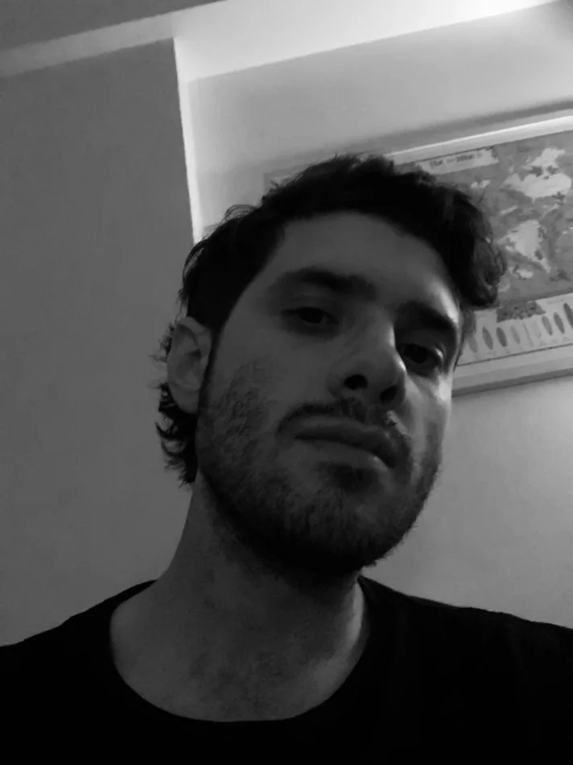

Tomi Palasi
Esquelense de nacimiento. La vida me fue llevando por diferentes partes del mapa como Trelew (Chubut), Mar del Plata (Buenos Aires), 25 de Mayo (Buenos Aires) y finalmente, hoy tiro ideas desde Parque Chacabuco (Capital Federal).
En el camino estudié Diseño Industrial y Desarrollo Web, una mezcla rara que me dejó una obsesión: desarmar la realidad para volverla a armar con un toque de ingenio, estética, humor y funcionalidad.
Me gustan los tatuajes, el ski, el surf, el bodyboard y la naturaleza. Cuando no estoy maquinando ideas o escuchando música, me meto en partidas de rol de mesa, un espacio donde la cabeza explota sin límites en cada decisión. En mis tiempos libres me dedico a pensar conceptos cómicos y ver cómo bajarlos a la realidad.
Actualmente estudio en Brother Buenos Aires, el lugar donde lo encontré al Checha (Fran), Dani, Juani y al espacio para potenciar todo esto. Creo en las buenas ideas, en el trabajo en dupla y en cranear proyectos copados que valgan la pena.